Subaru WRX
The rally-bred, all-wheel-drive compact car from Japan
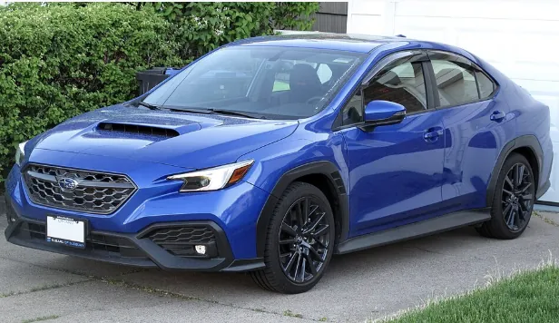
The Subaru WRX is an all-wheel-drive compact car made by the Japanese automaker Subaru. It began in 1992 as a version of the Subaru Impreza built for the World Rally Championship, and Subaru has said the name stands for "World Rally eXperimental."
Starting with the 2015 models, the WRX became its own model, separate from the Impreza, and was sold only as a sedan. The car is famous for its bright blue paint and gold wheels, a look that came from the Subaru rally team's sponsorship by a cigarette brand.
STI
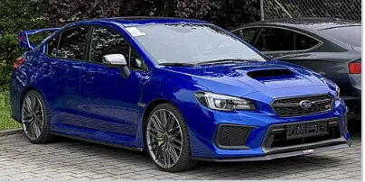
In 1988, Subaru created Subaru Tecnica International (STI) as its motorsport division, to build cars for the World Rally Championship and other racing. After the first Impreza arrived in November 1992 and its rally car debuted the next year, Subaru began selling an STI version to the public in January 1994. This road car was needed so the rally car could meet the competition's homologation rules, which require race cars to be based on cars people can actually buy.
STI versions were first sold only in Japan and later in other markets. Because the STI was usually the highest-performance Impreza, it became popular with enthusiasts, tuners, and amateur racers, especially in rallying and track driving.
STI models fall into two main groups:
- Fully developed cars built to qualify a model for motorsport, then sold as street-legal road cars.
- Cars fitted at the factory with parts from the STI catalog and sold as "Tuned by STI" models.
Subaru has also sold many limited editions of the WRX STI, many of them only in Japan.
Impreza-based models (1992–2014)
The first three generations of the WRX were built on the regular Impreza platform. They replaced the older Subaru RX hatchback and sedan.
First generation (GC and GF)
The first WRX models were based on the Impreza sedan, with the chassis code GC. A wagon version (GF) followed in 1993, and the first upgraded WRX STi arrived in 1994. In the late 1990s and early 2000s, Subaru also offered several limited-edition coupes. They were never sold in the United States and are highly sought after by Subaru fans today.
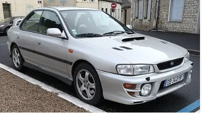
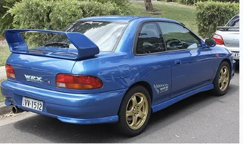
Second generation (GD and GG)
The second-generation WRX came as a sedan (GD) and a wagon (GG). It was the first WRX sold in the United States, arriving for the 2002 model year, and the STI followed in 2004.
This generation is known by nicknames for its three different front ends:
- "Bugeye," with round headlights, from 2000.
- "Blobeye," from 2004.
- "Hawkeye," with sharper headlights, from 2006.
Through a deal between Subaru's parent company, Fuji Heavy Industries, and General Motors, Saab also sold its own version of the WRX wagon, the Saab 9-2X, for 2005 and 2006.
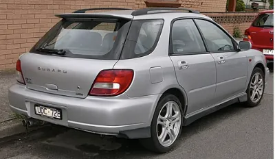
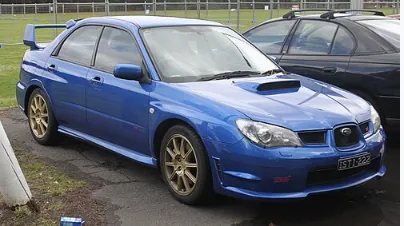
Third generation (GE, GH, GR, and GV)
The third-generation WRX was first sold as a sedan (GE) and a hatchback (GH), which replaced the wagon. The WRX STI came only as a wider-bodied hatchback (GR).
For the 2011 model year, the regular WRX sedan and hatchback moved to the wide STI body, and a wide-body STI sedan (GV) was added. The Impreza itself was redesigned for 2012, but the WRX stayed on this platform until 2014 in most markets.
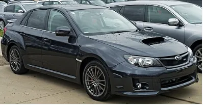
World Rally Championship
The Subaru Impreza WRC was the World Rally Championship car based on the WRX. It was run by Subaru's factory team, the Subaru World Rally Team, and replaced the Subaru Legacy in 1993. From its debut at the 1993 Rally Finland, the car won six world titles: three manufacturers' titles in a row and three drivers' titles.
Group A Impreza (1993–1996)
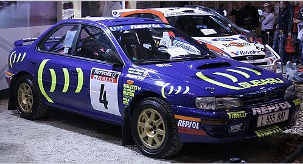
Subaru's partner Prodrive decided that a smaller, nimbler car would make a better rally car than the Legacy. The Group A Impreza was 160 mm shorter, had a 60 mm shorter wheelbase, and was more evenly balanced from front to back. It was also the first rally car with active differentials. On its debut at the 1993 1000 Lakes Rally in Finland, Ari Vatanen drove it to second place.
In 1994 the team switched from Michelin to Pirelli tires. For 1995, rule makers required smaller air intakes to slow the cars down, and Subaru answered with a reworked engine.
World Rally Car Impreza GC (1997–2001)
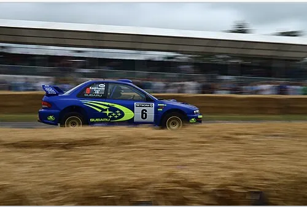
In 1997, the World Rally Car rules replaced Group A and gave teams much more freedom. Subaru built a completely redesigned two-door car, the WRC97. It was 1,770 mm wide and made 300 hp and 470 N⋅m of torque.
Each year brought a new version:
- WRC98: added computer-controlled active differentials and an electronic throttle, but mechanical failures kept the team out of the title fight.
- WRC99: introduced a semi-automatic gearbox shifted with paddles on the steering wheel, like a Formula One car. Subaru was the first rally team to use this technology, which every World Rally Car used until it was banned in 2011.
- WRC2000: looked almost the same, but more than 80% of its mechanical and electronic parts were redesigned. It won on its debut at Rally Portugal.
World Rally Car Impreza GD (2001–2008)
The WRC2001 was based on the new GD Impreza and had four doors instead of two, with better aerodynamics, weight balance, and a lower center of gravity. Later versions kept improving it:
- WRC2003: switched to the "blobeye" look of the road car and had a lighter, stiffer body.
- WRC2005: was 30 mm wider and used more lightweight composite panels.
- WRC2006: took on the "hawkeye" look. New rules banned active differentials and water injection.
- WRC2007: had new suspension and cooling, but struggled against its rivals with handling problems.
The WRC2007 gearbox alone took 85 hours to build and cost over £75,000. Its semi-automatic system could change gears in less than 0.1 seconds, and the engine and gearbox could be swapped out in 10 to 12 minutes.
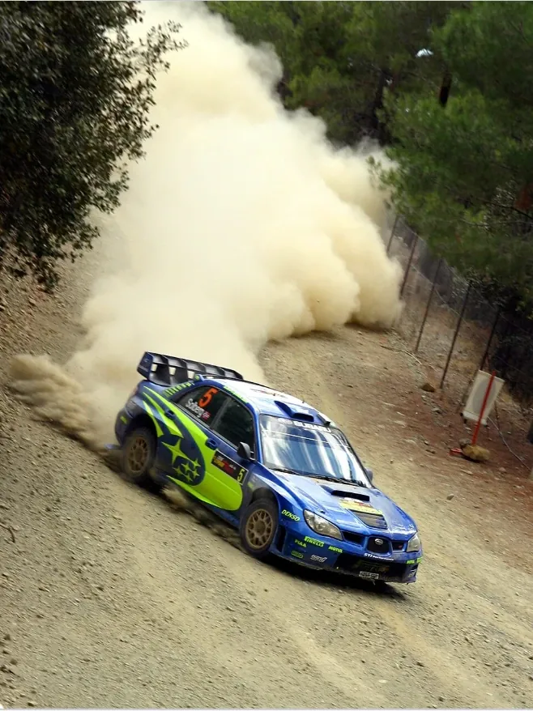
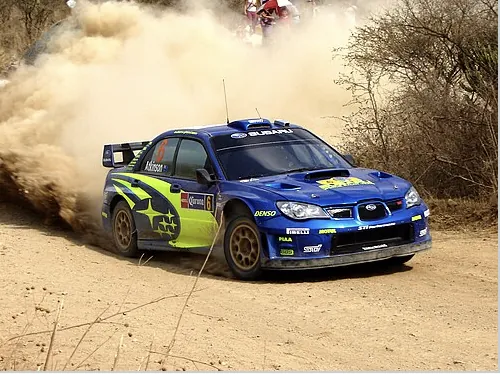
World Rally Car Impreza GR (2008)
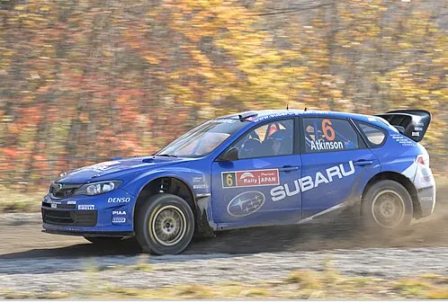
Subaru began testing the WRC2008, based on the new GR hatchback, in December 2007. It debuted at the Acropolis Rally in Greece in May 2008, where Petter Solberg finished second. Chris Atkinson's third place at Rally Finland was the car's last podium. Subaru withdrew from the World Rally Championship at the end of 2008 because of the global financial crisis.
First generation WRX (VA, 2015)
For the 2015 model year, Subaru stopped selling the WRX under the Impreza name. In Japan it was called the WRX S4. It was still based on a modified Impreza body, but the whole front end and the rear fenders were unique to the WRX, and it had more power, firmer suspension, bigger brakes, and a lower ride height.
This generation was only sold as a sedan. That was a notable change, because the hatchback had made up about half of US WRX and WRX STI sales.
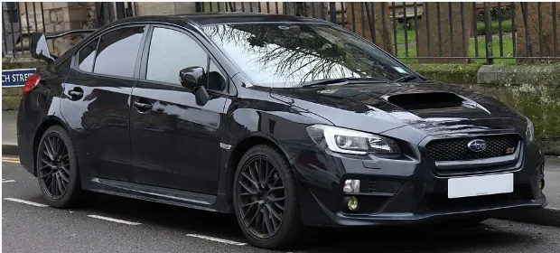
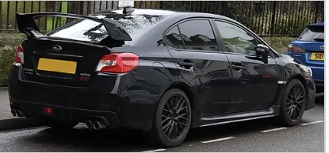
Powertrain
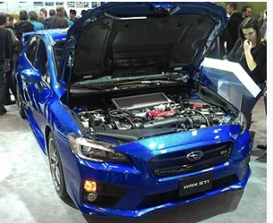
This was the first WRX without an EJ-series engine. The regular WRX used a new 2.0-liter FA20F engine with direct injection and a twin-scroll turbocharger, mounted low at the front of the engine to lower the car's center of gravity. It reaches peak torque at just 2,000 rpm, about half the engine speed of the older 2.5-liter engine. A 6-speed manual was standard, and a CVT automatic with paddle shifters was optional.
The WRX STI kept the older EJ engine: a 2.0-liter EJ207 in Japan and a 2.5-liter EJ257 elsewhere. It also kept its 6-speed manual gearbox and hydraulic power steering, with a quicker steering ratio.
| Model | Engine | Power | Torque |
|---|---|---|---|
| WRX (international) | 2.0 L FA20F | 268 hp (200 kW) | 258 lb⋅ft (350 N⋅m) |
| WRX STI (international) | 2.5 L EJ257 | 305 hp (227 kW) | 290 lb⋅ft (393 N⋅m) |
| WRX STI (Japan) | 2.0 L EJ207 | 300 hp (224 kW) | 311 lb⋅ft (422 N⋅m) |
Facelift and updates
In January 2017, Subaru announced updates for North America that answered some complaints about the 2015 car: revised suspension, better interior materials, a quieter cabin, and new front styling. A new Performance Package added Recaro seats, better brake pads, and no sunroof to save weight.
The 2018 and 2019 models added a larger driver display, the Subaru STARLINK infotainment system with Apple CarPlay and Android Auto, and an optional Harman Kardon stereo. Subaru's EyeSight driver-assist system became standard on all CVT models from 2020. European sales of the WRX STI ended in 2018.
Special editions
Subaru made many limited editions of the VA WRX and WRX STI, often for only one country. Two of the best known were sold only in Japan.
WRX STI S208 (2017): limited to 450 cars. Its 2.0-liter EJ20 engine was tuned to 329 hp (245 kW). It also had quicker steering, Bilstein suspension, Recaro seats, 19-inch BBS wheels, and Brembo brakes. Up to 350 cars could get the NBR Challenge Package, which added a carbon fiber wing, front lip, and roof. The Cool Grey Khaki color was only available with that package.
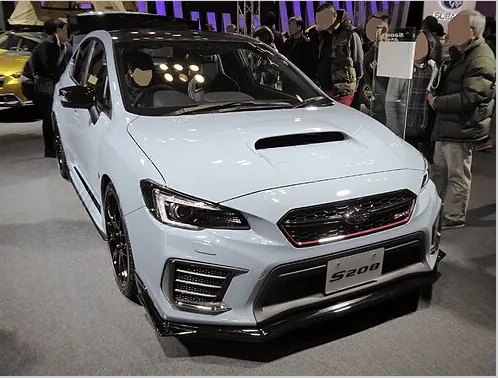
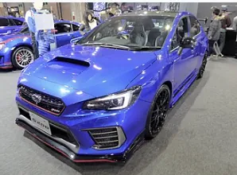
WRX STI EJ20 Final Edition (2019): built to mark the end of the EJ20 engine, with only 555 made. Its engine parts were balanced far more precisely than usual, close to the standard of a racing engine.
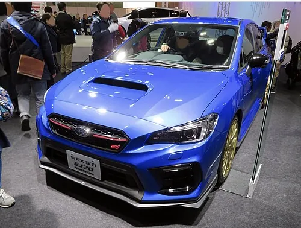
Second generation WRX (VB, 2021)
The current WRX was redesigned for the 2022 model year and moved to the Subaru Global Platform. It was revealed on 10 September 2021, after the New York auto show where it was supposed to debut was canceled.
In March 2022, Subaru announced it would not make a gas-powered STI version of this generation, because emissions rules were changing too quickly. A future WRX STI is likely to be a hybrid or electric car.
North America
The new WRX uses a 2.4-liter turbocharged FA24F boxer engine that makes 271 hp (202 kW) and 258 lb⋅ft (350 N⋅m) of torque. Buyers can choose a 6-speed manual or a new CVT called the Subaru Performance Transmission. Cars with the Drive Mode Select system get electronically adjustable dampers, a first for the WRX.
It went on sale in February 2022. Later model years brought standard EyeSight and wireless phone connectivity (2024), the "Tuned by STI" tS model (2025), and a limited Series.Yellow edition of 350 cars (2026).
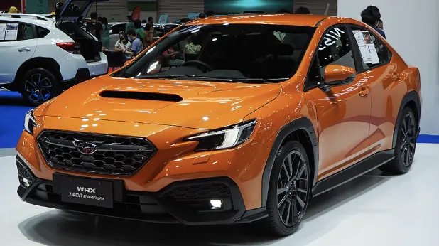
Viziv concepts
The Viziv Performance Concept, shown at the Tokyo Motor Show in October 2017, hinted at the look of the second-generation WRX. It had a longer wheelbase than the VA WRX with shorter overhangs, and was 1,950 mm wide.
An updated Viziv Performance STI Concept followed at the Tokyo Auto Salon in January 2018. Around the same time, Subaru's UK marketing director said the new platform was designed for hybrid and electric power, fueling talk that the next STI could be a hybrid.
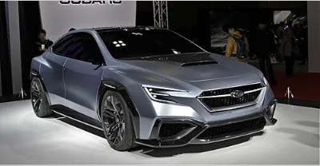
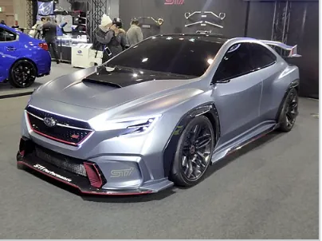
Motorsport
Rallying
After the Legacy's last rally in New Zealand in 1993, Subaru took the new Impreza to Rally Finland. It led at one point and finished second, showing that the smaller car had an edge over the Legacy. Subaru no longer competes in the World Rally Championship, but it still races WRX STI-based cars in rallies in the United States.
In 2016, former British rally champion Mark Higgins lapped the Isle of Man TT course in a VA WRX STI in 17 minutes, 35.139 seconds.
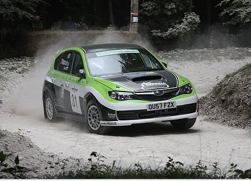
Endurance racing
Subaru Tecnica International has raced the WRX STI in the Nürburgring 24 Hours in Germany since 2008. It has won the SP3T class six times: in 2011, 2012, 2015, 2016, 2018, and 2019.
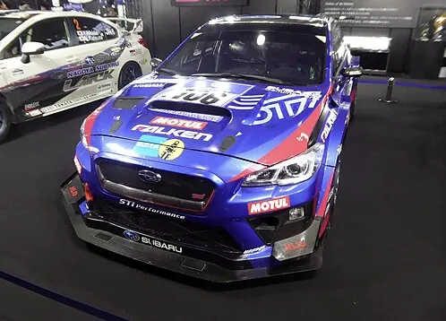
Project Midnight
In 2024, Subaru Motorsports USA and Vermont SportsCar revealed "Project Midnight," a WRX prototype built for pure speed on pavement. It has a carbon fiber body, weighs 2,469 pounds (1,120 kg), and uses a 2.0-liter flat-four engine making 670 hp (500 kW).
Driven by Scott Speed, it finished second in the Goodwood Festival of Speed hill climb shootout in both 2024 and 2025. In August 2026, it set a new record at the Mount Washington Hillclimb with a time of 5:11.89.
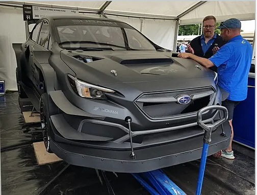
Image credits
All photos come from Wikimedia Commons and are listed in the order they appear on this page.
- 2022 WRX Sport-Tech: Elise240SX, CC BY-SA 4.0
- Facelifted WRX STI: Alexander Migl, CC BY-SA 4.0
- First-generation Impreza sedan: Guillaume Vachey, CC0
- 1999 WRX STI Version 5 coupe: Jeremy from Sydney, Australia, CC BY 2.0
- First-generation Impreza wagon: Makizox, CC BY-SA 4.0
- 2001 Impreza WRX wagon: OSX, public domain
- 2003 Impreza WRX Turbo: Vauxford, CC BY-SA 4.0
- 2006 Impreza WRX STI: Jeremy from Sydney, Australia, CC BY 2.0
- Third-generation WRX STI hatchback: TTTNIS, public domain
- 2011 WRX sedan: OSX, public domain
- Colin McRae's Impreza 555: Liz Jones, modified by tma, CC BY 2.0
- Impreza WRC97: Neil, CC BY 2.0
- Petter Solberg, 2006 Cyprus Rally: Leonid Mamchenkov, CC BY 2.0
- Chris Atkinson, 2008 Rally México: Oadiazb, CC BY-SA 3.0
- Chris Atkinson, 2008 Rally Japan: Kirche, CC BY-SA 4.0
- 2015 WRX STI, front and rear: Vauxford, CC BY-SA 4.0
- 2015 WRX STI engine bay: Bull-Doser, public domain
- WRX STI S208 (both photos): Tokumeigakarinoaoshima, CC BY-SA 4.0
- WRX STI EJ20 Final Edition: Tokumeigakarinoaoshima, CC BY-SA 4.0
- 2022 WRX 2.4 EyeSight: Chanokchon, CC BY-SA 4.0
- Viziv Performance Concept: TTTNIS, CC0
- Viziv Performance STI Concept: Tokumeigakarinoaoshima, CC BY-SA 4.0
- Impreza WRX STI at Goodwood 2010: Brian Snelson, CC BY 2.0
- 2016 Nürburgring 24 Hours class winner: Tokumeigakarinoaoshima, CC BY-SA 4.0
- Project Midnight: Calreyn88, CC BY-SA 4.0